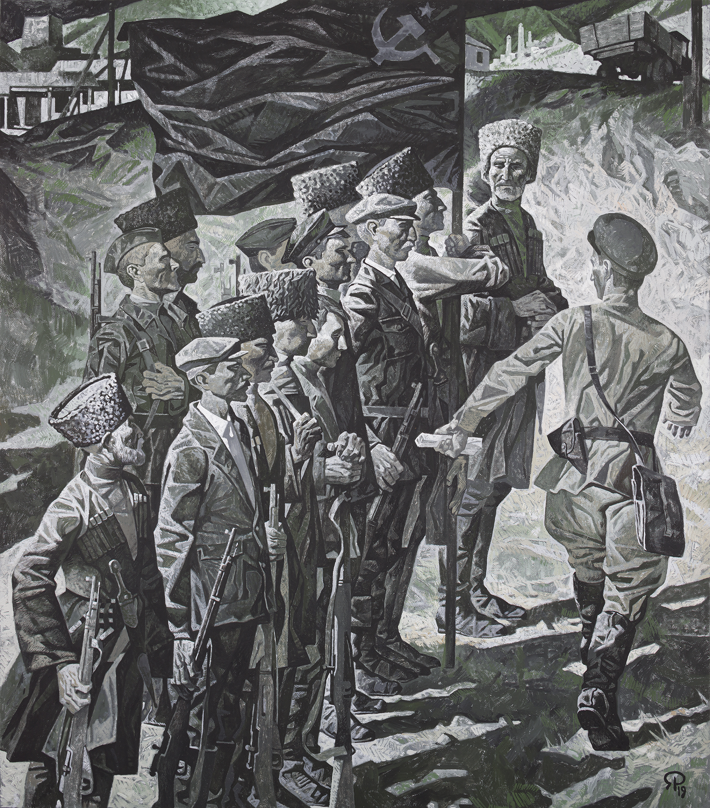

На картине изображены вайнахи (чеченцы и ингуши), вставшие на защиту Родины в рядах народного ополчения в начале Великой Отечественной войны. Лица героев сосредоточены и серьёзны, их позы выражают готовность к бою. С помощью этого произведения автор подчёркивает вклад чеченского народа в защиту Советского народа, противопоставляя их героизм последующей несправедливости депортации.
За 4 года до графического варианта был написан цветной. Графический вариант был последней шестнадцатой картиной, написанной специально для выставки в Москве. В варианте картины 2015 года флаг выделен цветом, а в графическом больше выделена фактура.